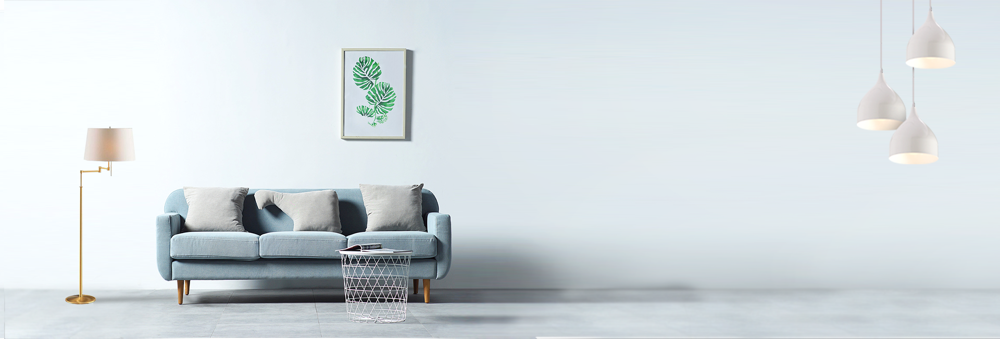
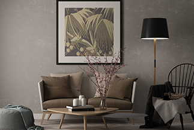
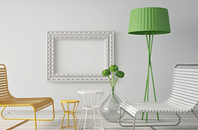
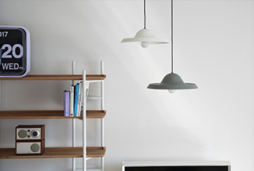
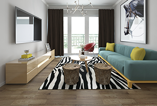

Toggle navigation
网站首页
关于我们
产品中心
工程案例
企业动态
招商加盟
VR展厅
联系我们
搜索

News
新闻资讯
产品展示
热销产品
热销产品
热销产品
当前位置：
产品中心
-
产品展示
阿里照明体验中心正式上线
体验各式各样的照明效果、照明设备
LEARN MORE
阿里蒋蒋照明有限责任公司成都
阿里蒋蒋总公司决定在成都设立分部，现在 正在建设中，估计于5月份完工。总公司CE O会亲临竣工现场，并发表讲话备
LEARN MORE
406-4281110
服务热线
阿里蒋蒋，“工匠精神”，追求极致完美
2018.06.06
来源：阿里蒋蒋
今年“工匠精神”这个词语被写入中国政府工作报告，古人云:“玉不琢 ， 成器”创造出新成果工匠精神不仅体现了对产品精心打造、精工制作的理 念和追求，更是要不断吸收最前沿的技术，创造出新成果..
LEARN MORE

阿里蒋蒋，“工匠精神”，追求极致完美
2018.06.06
来源：阿里蒋蒋
今年“工匠精神”这个词语被写入中国政府工作报告，古人云:“玉不琢 ， 成器”创造出新成果工匠精神不仅体现了对产品精心打造、精工制作的理 念和追求，更是要不断吸收最前沿的技术，创造出新成果..
LEARN MORE

阿里蒋蒋，“工匠精神”，追求极致完美
2018.06.06
来源：阿里蒋蒋
今年“工匠精神”这个词语被写入中国政府工作报告，古人云:“玉不琢 ， 成器”创造出新成果工匠精神不仅体现了对产品精心打造、精工制作的理 念和追求，更是要不断吸收最前沿的技术，创造出新成果..
LEARN MORE

阿里蒋蒋，“工匠精神”，追求极致完美
2018.06.06
来源：阿里蒋蒋
今年“工匠精神”这个词语被写入中国政府工作报告，古人云:“玉不琢 ， 成器”创造出新成果工匠精神不仅体现了对产品精心打造、精工制作的理 念和追求，更是要不断吸收最前沿的技术，创造出新成果..
LEARN MORE

上一页
1
2
3
4
下一页
末页